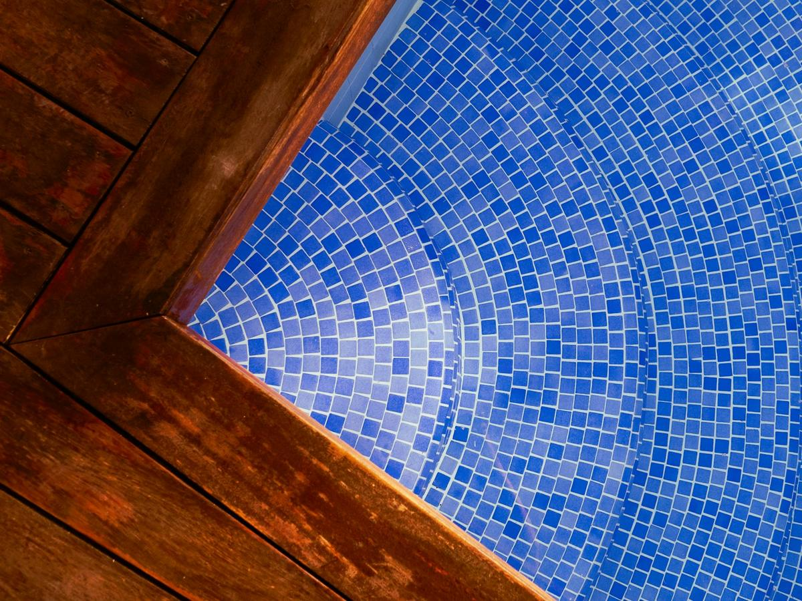
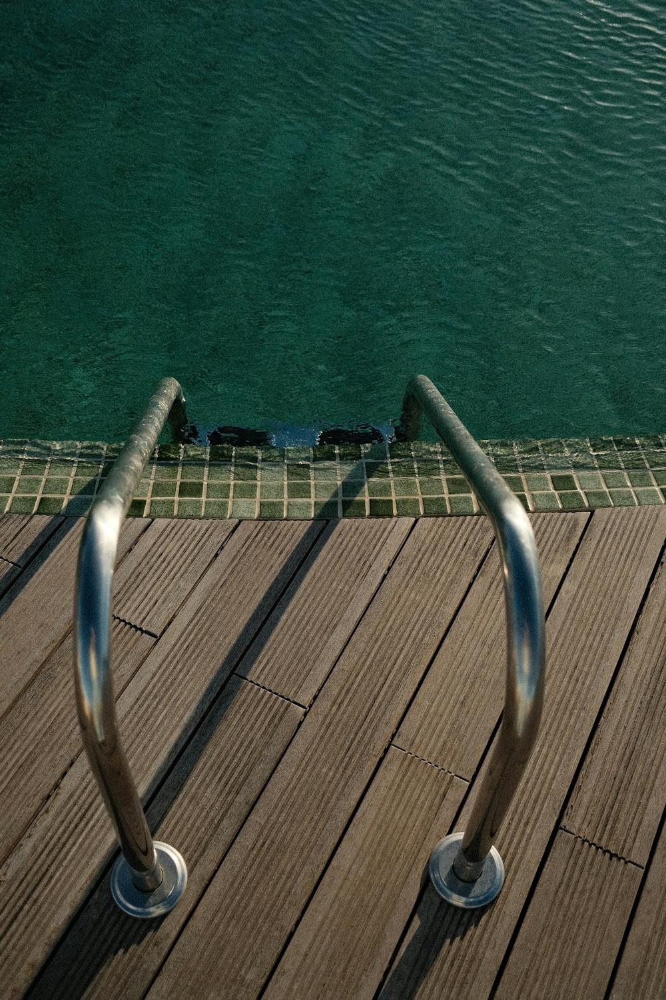
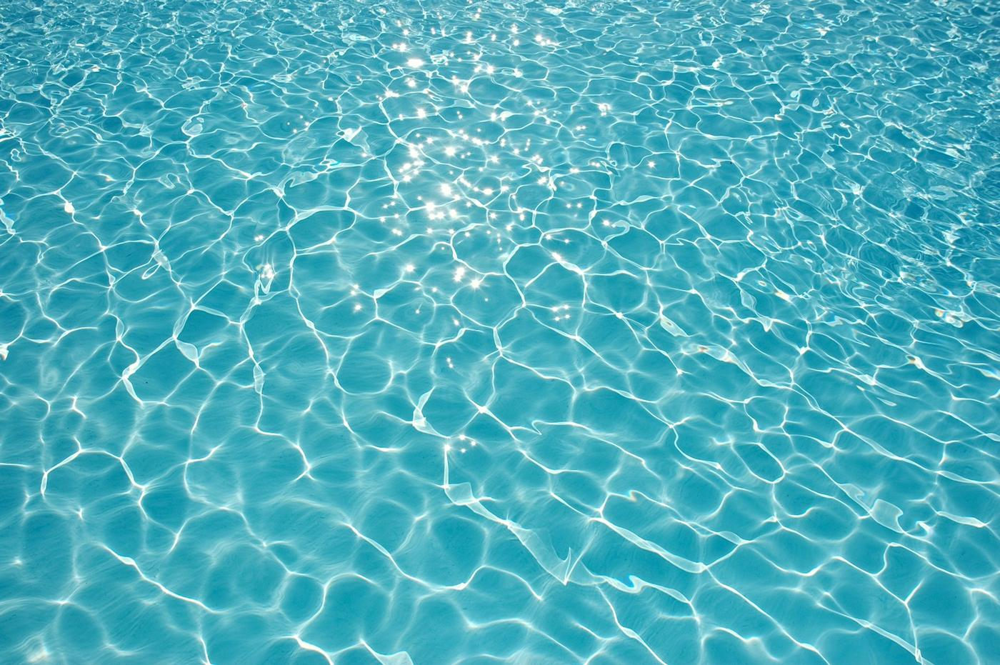
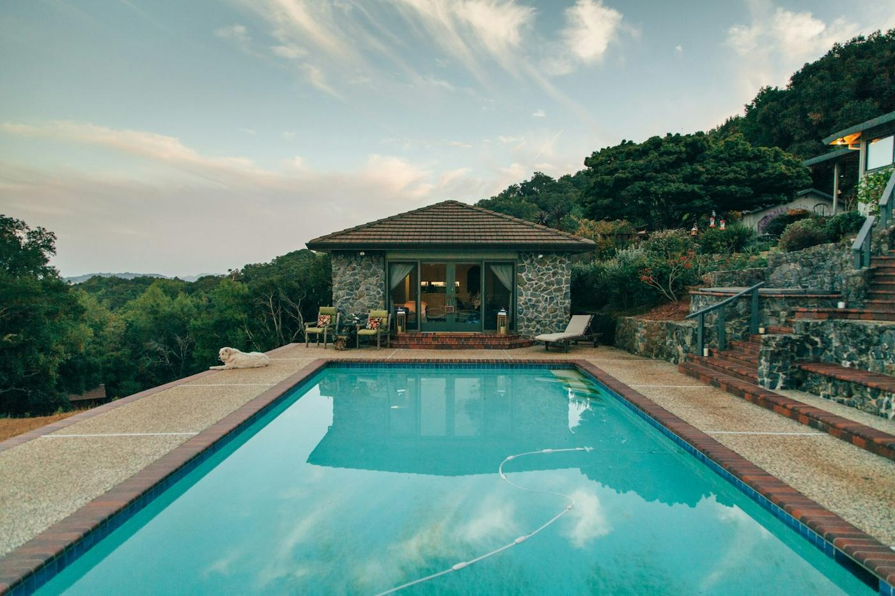

Construction
Des piscines traditionnelles, dessinées selon vos envies et la configuration du terrain.
 Photo d'illustration · Clay Banks, Unsplash
Photo d'illustration · Clay Banks, Unsplash
Saint-Jean-de-Monts · Vendée
Construction, entretien et SAV, de Noirmoutier à Saint-Gilles-Croix-de-Vie.
Le métier

Des piscines traditionnelles, dessinées selon vos envies et la configuration du terrain.

De la mise en service à l'hivernage. Diagnostic et réparation du matériel par nos techniciens.

Une trentaine de modèles, à découvrir au showroom.

L'entreprise
Avis Google
« Projet complexe avec maçonnerie (escalier rond, 2 banquettes, rehaussement du fond) et renouvellement de la membrane en 2 couleurs et textures. Equipe efficace, toujours ponctuelle, gentille, à l'écoute… »
« Rénovation très réussie : changement de PVC armé création d'une plage et de marches et pose d'un volet roulant… »
Note, nombre d'avis et extraits lus sur la fiche Google de Piscines Océanes le 11 novembre 2026. Extraits reproduits tels quels, noms abrégés.
Contact
29 rue des Essepes, ZAC du Clousis
85160 Saint-Jean-de-Monts
Horaires